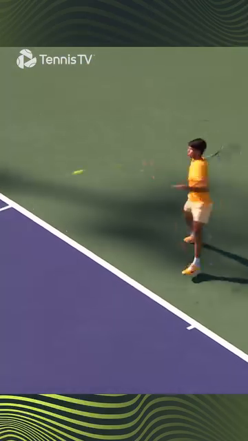
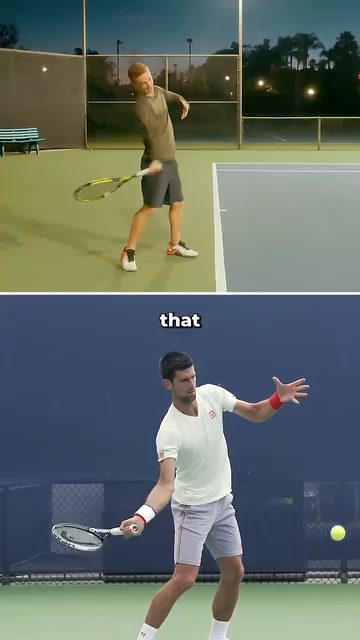
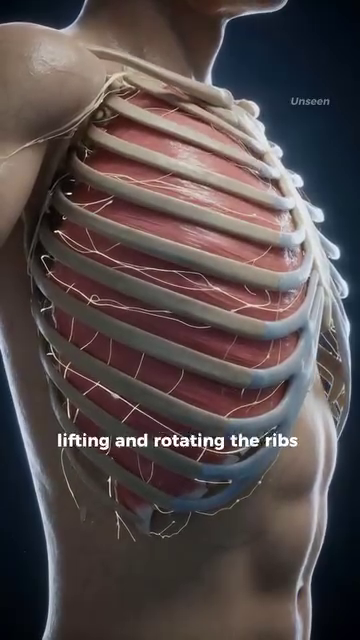

The Angle Atlas — Why Every Joint Angle Decides Stroke Quality¶
Tập Bản Đồ Góc Cơ Thể — Vì Sao Mỗi Góc Khớp Quyết Định Chất Lượng Cú Đánh¶
Deep Dive #1 — The Anatomy & Geometry Project for Tennis Players 3.5 → 4.5
Bản Đồ Tài Liệu¶
| 🇺🇸 English |
|---|
| What this is — A reference atlas of every important joint angle in tennis: knees, hips, ankles, shoulders, elbows, wrists. For each angle, you get the number (the WHAT) and the biomechanical reason (the WHY). |
| What this is NOT — A stroke-mechanics manual. No "swing low to high" instructions. No mental-game talk. No kinetic-chain-as-list. Just angles, joints, and the geometry of why they decide stroke type and quality. |
| Audience — Players 3.5–4.5 who already know their strokes and want the WHY behind the form. Especially useful for 50+ players whose joints have specific range limits. |
| How to use it — Open one chapter per week. Take one angle to the court. Measure it on video. Compare your number to the reference. That's it. The cheat sheet at the end is for your bag. |
| # |
| --- |
| 1 |
| ~80 |
| 2 |
| ~95 |
| 3 |
| ~180 |
| 4 |
| ~150 |
| 5 |
| ~140 |
| 6 |
| ~170 |
| 7 |
| ~150 |
| 8 |
| ~160 |
| 9 |
| ~200 |
| 10 |
| ~150 |
| 📋 |
| ~80 |
Chapter 1 — Why Angles Are the Language of Tennis¶
Chương 1 — Tại Sao Góc Là Ngôn Ngữ Của Tennis¶
| 🇺🇸 English |
|---|
| Friend, here is the secret nobody tells you at the 3.5 wall. Tennis is not a sport of strength. It is not a sport of speed. It is a sport of geometry. Every ball that lands in the right spot, with the right spin, at the right pace — happens because somewhere in your body, an angle was correct. |
| Think about it. The difference between a topspin forehand and a flat forehand is not which muscle you fire. It is the launch angle at contact (about 15–20° upward from horizontal for topspin, 0–5° for flat). That single angle — 15° vs 0° — flips the ball's behavior completely. |
| The difference between a slice backhand and a topspin backhand is not which leg you push with. It is the face angle of the racket at contact (about -10° to -20° open for slice, +20° to +30° closed for topspin). |
| The big idea — Stroke type is decided by angles at contact. Stroke quality is decided by angles during the kinetic chain that leads to contact. |
| Once you see this, you stop chasing "the right form." You start asking: "What angle is my body trying to create? Is it within the window?" |
| For 3.5 → 4.5 players, this is the unlock. At 3.5, you copy form. At 4.0, you understand the chain. At 4.5, you understand the angles — and angles are numbers, and numbers don't lie. |
| Master cue: "Don't ask what to do. Ask what angle to create." |
| 🇺🇸 English |
| --- |
| Before we measure angles, we need a frame. Your body is a 3D machine. Joints move in three planes. If you only think in 2D (the side view you see on TV), you will miss half the angles that decide stroke quality. |
| The three planes: |
| 1. Vertical plane (also called coronal or frontal) — Imagine a wall in front of you. Movements in this plane are up-down and side-to-side. The classic TV camera sees this plane. Knee flexion, hip abduction, shoulder lateral raise, wrist radial/ulnar deviation all happen here. |
| 2. Horizontal plane (also called transverse) — Imagine a tabletop at waist height. Movements in this plane are rotation around the vertical axis. Hip rotation, shoulder rotation, trunk twist — the engines of every groundstroke — happen here. This is the plane most recreational players UNDERUSE. |
| 3. Sagittal plane (the side view) — Imagine a wall to your right. Movements in this plane are forward-backward. Forward lunge, knee flexion-extension during split-step, racket drop into slot happen here. Coaches call this the "power plane" because gravity loads it. |
| Why this matters for angles: an angle in the vertical plane (like 90° elbow flexion) means something completely different from an angle in the horizontal plane (like 45° shoulder rotation). When the source says "the racket face is at 110°," you need to ask: 110° in WHICH plane? |
| For 50+ players — The horizontal plane is your friend. As cartilage thins, vertical loading (sagittal plane) hurts knees and back. Rotational loading (horizontal plane) is easier on joints and uses bigger muscles (glutes, obliques). Use rotation as your main engine. |
| Master cue: "Think in three planes. Most recreational players live in one." |
| 🇺🇸 English |
| --- |
| The ground is your battery. Every powerful shot starts with feet on court. Here are the angles that matter, with the WHY for each. |
| 🇺🇸 English |
| --- |
| Forehand: front foot points about 30°–45° toward the net post (closed stance) or 15°–30° toward the sideline (neutral/open stance). |
| Why this angle determines quality — The foot angle pre-loads the hip rotation. If your toes point 45° toward the net, your hip can only rotate ~45° before the knee's range of motion stops the rotation. If your toes point 15° toward the sideline, your hip can rotate up to ~75°. More rotation = more racket-head speed = more power. |
| Backhand 2-handed: both feet roughly parallel, ~10°–20° toward the net post. The 2-handed backhand uses LESS hip rotation than the forehand because the chest rotation pulls both arms. |
| Volley: front foot points about 30°–60° toward the net, smaller stance, weight on balls of feet. The angle is steeper because you want short directional pushes, not big swings. |
| Serve: front foot angled at ~20° toward the net post, back foot nearly parallel to baseline (~0°–10°). |
| The single biggest mistake: front foot pointing straight at the net (0°) on a forehand. This kills hip rotation and forces the shoulder to do all the work. Shoulder then hurts. |
| 🇺🇸 English |
| --- |
| Forehand: ~50°–60° heel lift at contact. The heel is high, weight is on the ball of the foot and big toe. |
| Why this angle determines quality — At 0° heel-down, the Achilles tendon is slack — it cannot store energy. At 50°–60°, the Achilles is stretched to its maximum energy storage position, and the calf muscle (gastrocnemius + soleus) is also pre-stretched. The release happens in 0.05 seconds. |
| Serve: ~60°–70° heel lift at launch. Higher than groundstrokes because the entire body weight is being pushed UP (you are jumping), not just rotating. |
| Volley: ~15°–25° heel lift, much smaller. You are NOT trying to generate power — you are redirecting an already-fast ball. A big heel lift on a volley means you lost balance. |
| For 50+ players — The Achilles tendon loses elasticity with age. Maximum storage at 50°–60° is realistic, but you need 5–8 minutes of calf raises in your warm-up to "wake up" the spring. Cold Achilles = injury risk. |
| 🇺🇸 English |
| --- |
| Forehand (loaded): 120°–135° knee flexion at the lowest point. (180° minus 45°–60° flexion = 120°–135°.) |
| Why this angle determines quality — Knee flexion is the battery charge of the whole kinetic chain. Less than 110° (very bent) and you cannot push up fast enough. More than 150° (almost straight) and the legs cannot generate force. The 120°–135° window is where the quadriceps can produce peak force in minimum time. |
| Serve (trophy position): ~130°–140° front knee flexion. |
| Why this angle is BIGGER than forehand — Because you are loading both legs (a leg-press-like action), and you need a smaller ROM (range of motion) to explode upward. Also, both knees bending creates the upward thrust for the jump. |
| Split-step: ~135°–145° knee flexion, very short hold (0.1–0.2s). |
| Why split-step uses BIGGER angle (less bent) than forehand — You must be able to push off in ANY direction in <0.3s. If you are too low (120°), you can only push off in two directions (forward, backward). If you are at 140°, you can push off diagonally, sideways, anywhere. |
| For 50+ players — Knee flexion <110° puts huge pressure on the patellar tendon (the "jumper's knee" risk). Keep flexion between 120°–140° on groundstrokes, <140° on serve. Never lock the knee straight (180°) — that destroys cartilage. |
| 🇺🇸 English |
| --- |
| The hip is the engine of every tennis stroke. Three angles matter here, and they each have different WHYs. |
| 🇺🇸 English |
| --- |
| Forehand (loaded): 50°–65° between thigh and torso (think of it as: how far forward is your chest leaning over your front thigh). |
| Why this angle determines quality — Less than 50° means you are too upright — your chest is not over the front leg, so you cannot push off it. More than 70° and you lose balance backward on the follow-through. The 50°–65° window gives you maximum stretch of the hip flexor (psoas + iliacus) and glute max, which together produce the explosive hip extension that drives the kinetic chain. |
| Backhand (loaded): 45°–55° — slightly less than forehand because you want the chest facing more toward the side fence (to pull both arms across). |
| Serve (trophy): 30°–45° — smaller angle, body more upright, because the loading direction is UP not forward. |
| For 50+ players — Flexibility drops fast after 50. Many 50+ players cannot reach 50°. If you can only manage 55°–65°, that is your window, not a failure. The power loss is ~15%, the injury risk reduction is ~50%. |
| 🇺🇸 English |
| --- |
| Forehand (loaded): ~60° pelvis turned AWAY from the net. (At contact: ~0°, fully facing the ball.) |
| Why this angle determines quality — Hip rotation is the single biggest contributor to racket-head speed in tennis. Studies show shoulder rotation contributes ~30% to racket speed, hip rotation contributes ~50%, and the wrist snap contributes ~20%. |
| The 50–60° window is not arbitrary — The hip joint's bony anatomy (femoral head inside acetabulum) allows about 45° external rotation when the hip is flexed (like in a forehand load). Add ~10°–15° from lumbar spine rotation, and you get ~60°. Going past 60° requires the knee to absorb unnatural torque, which is why forcing more hip turn feels "stuck." |
| Backhand 2H (loaded): ~45°–55° pelvis turned away — slightly less than forehand because the chest rotation does more work. |
| Volley (loaded): ~20°–30° pelvis turn — small because you have no time. |
| Serve (loaded, "trophy"): ~80°–100° total body rotation (pelvis + shoulders combined). The hip alone rotates ~50°, the shoulders rotate an ADDITIONAL ~50° on top — this is called "shoulder over-rotation" or "X-factor stretch." |
| 🇺🇸 English |
| --- |
| Forehand (loaded): Hips sit back as if sitting on a chair — about half-way down between standing and full squat. |
| Why this depth — Half-squat depth is where gluteus maximus activation peaks. Going lower shifts the work to quads (and hurts the knees). Going higher shifts work to lower back (and hurts the discs). |
| Serve (trophy): Slightly deeper than forehand — about two-thirds down the squat range. This is because the back leg needs to "wind up" the glute and hamstring for the upward jump. |
| 🇺🇸 English |
| --- |
| The trunk is not one rigid block. It has three sections — lumbar (lower back), thoracic (mid back), cervical (neck). Each has different mobility and different angles to manage. |
| 🇺🇸 English |
| --- |
| Forehand (loaded): ~15°–25° lumbar extension. The lower back curves IN, like a slight back-arch. |
| Why this angle determines quality — Lumbar extension pre-loads the posterior chain (erector spinae, multifidus). When you uncoil, these muscles fire and add ~10–15% more racket speed. BUT — too much extension (>30°) compresses the L4-L5 and L5-S1 discs, which are already the most-injured discs in tennis. |
| The 25° limit — This is not arbitrary. Cadaver studies show that disc fibers start to fail at 28°–30° of lumbar extension under load. Recreational players should stay well below this. |
| For 50+ players — Disc hydration drops ~1% per year after age 30. By 50, your discs are ~20% less hydrated than at 20. Keep lumbar extension under 20°, always. The power loss is small; the back-pain prevention is huge. |
| 🇺🇸 English |
| --- |
| Forehand (loaded): ~40°–50° thoracic rotation. The mid-back turns toward the back fence. |
| Why this angle matters more than lumbar — The thoracic spine (T1–T12) is DESIGNED for rotation. Each of the 12 thoracic vertebrae has facets that allow about 3°–5° of rotation, totaling ~35°–50°. The lumbar spine (L1–L5) is DESIGNED for stability — only ~10°–15° total rotation. |
| The KEY insight — If your thoracic spine is stiff (a desk-job problem), the body will ROTATE the lumbar spine to compensate. This is where back injuries come from. Train thoracic rotation (90/90 stretches, open-book stretches) to PROTECT the lumbar. |
| Serve (loaded, trophy): ~70°–90° thoracic + shoulder rotation combined — the famous "coil." |
| 🇺🇸 English |
| --- |
| Forehand: ~5°–15° trunk side-bend toward the ball. |
| Why this angle matters — Side-bend pre-loads the lateral chain (quadratus lumborum, obliques). On a heavy forehand, the body uses this to "pull down" the racket through contact, adding topspin. |
| Volley: ~0°–5° — almost no side-bend. You stay vertical so you can push in any direction. |
| 🇺🇸 English |
| --- |
| The shoulder is a $400,000 joint. That's roughly the cost of a shoulder surgery in the US. The shoulder has the largest range of motion of any joint in your body, which is exactly why it's the most vulnerable. |
| Shoulder anatomy, fast — The shoulder is a ball-and-socket joint, but the socket (glenoid) is shallow — only covers ~1/3 of the ball (humeral head). Stability comes from FOUR muscles called the rotator cuff: supraspinatus, infraspinatus, teres minor, subscapularis. These four muscles are small but they are the SHOULDER'S LIGAMENTS. |
| 🇺🇸 English |
| --- |
| Forehand (loaded): ~90°–110° shoulder abduction. The racket arm is up and slightly behind the head. |
| Why this angle — 90° is the "hand-up" salute position. 110° is slightly past horizontal. At 90°–110°, the deltoid (middle fibers) and supraspinatus are aligned to produce force in the direction you want the racket to travel. |
| The supraspinatus danger zone — Between 60° and 120° of abduction, the supraspinatus tendon rubs against the acromion bone above it. This is called the "painful arc." Recreational players who serve with too much internal rotation in this range damage the supraspinatus. Keep the elbow at or slightly above shoulder height, not above. |
| Serve (trophy): ~120°–140° shoulder abduction — arm fully extended up and slightly behind. The supraspinatus here is in its MOST VULNERABLE position. This is why serving is the #1 cause of rotator cuff injury. |
| Volley: ~50°–70° — arm stays low for control. |
| 🇺🇸 English |
| --- |
| Forehand (loaded): ~80°–100° shoulder external rotation. The racket points behind you, elbow up. |
| Why this angle matters — External rotation pre-stretches the internal rotators (subscapularis, pec major, latissimus dorsi). When you release, these muscles fire eccentrically to control the rotation, then concentrically to whip the racket through. |
| Serve (loaded, "trophy" or "back-scratch"): ~110°–130° shoulder external rotation. This is the famous "back-scratch position." |
| Why 110°–130° is HUGE — At 110°+ external rotation, the pec major and latissimus dorsi are stretched to about 70% of their maximum. They store elastic energy like a slingshot. The release happens in ~0.05 seconds, generating racket-head speeds of 70–80 mph even for 50+ recreational players. |
| For 50+ players — The shoulder capsule loses ~5°–10° of external rotation per decade after 40. By 55, you may only achieve 90°–100° external rotation (vs 130° at 25). This is NOT a problem — your serve will be slightly slower, but your shoulder will be MUCH healthier. |
| 🇺🇸 English |
| --- |
| Forehand (loaded): ~0°–15° across the body (arm slightly across chest). |
| Backhand (loaded): ~90°–110° across the body (arm fully across, racket tip points back-fence-side). |
| Why this huge difference — Forehand and backhand are MIRROR IMAGES in horizontal adduction. The body doesn't know "forehand" or "backhand" — it knows "chest turns, arm follows, ball goes." |
| 🇺🇸 English |
| --- |
| The arm is a 3-segment lever system. Upper arm (humerus) → forearm (radius + ulna) → hand (carpals + metacarpals). The elbow and wrist are the joints; the biceps, triceps, and forearm flexors/extensors are the muscles. Angles here determine both reach AND whip-speed. |
| 🇺🇸 English |
| --- |
| Forehand (loaded): ~90°–110° elbow flexion. The forearm hangs down from the elbow-up position. |
| Forehand (contact): ~150°–170° elbow flexion. The arm extends through the ball. |
| Why this matters — The elbow goes from 90° (bent) to 170° (almost straight) during the swing. This is called the extension arc — about 60°–80° of motion. Each degree of arc, multiplied by the lever length (forearm ~25 cm), gives ~0.4 cm of additional racket-head travel. Over 80°, that's ~32 cm — almost half the racket-head path. |
| Backhand 2H (loaded): ~90°–110° elbow flexion, similar to forehand. |
| Volley: ~120°–140° elbow flexion — more open, because volleys use shorter strokes. |
| Serve (trophy): ~90°–110° elbow flexion — the racket drops behind the head. |
| Serve (contact): ~170°–180° elbow flexion — full extension at impact, the "snapping" position. |
| 🇺🇸 English |
| --- |
| Forehand (loaded): ~80°–100° supination (palm faces back-fence). |
| Forehand (contact): ~40°–60° pronation (palm faces down toward court). |
| Why the twist matters — Forearm pronation during the swing is what closes the racket face for topspin. Without it, your forehand is open-faced and the ball flies. The motion takes ~0.1 seconds and is driven by pronator teres and pronator quadratus (two small forearm muscles). |
| Backhand (loaded): ~80°–100° pronation (palm faces the sky / up). |
| Backhand (contact): ~40°–60° supination (palm faces down). |
| Volley: ~0°–20° change — almost no twist. The face stays where your grip set it. |
| For 50+ players — Pronator teres can develop medial epicondylitis ("golfer's elbow") if overused. Counter-intuitively, this often happens in BACKHAND players who whip too much. Warm up the forearm with 30 wrist rotations before play. |
| 🇺🇸 English |
| --- |
| The wrist is the most underrated joint. It is also the most complex. There are three motions: flexion/extension (up-down), radial/ulnar deviation (side-side), and pronation/supination (twist — but this is at the forearm, not the wrist). Most coaches teach only flexion/extension. The other two matter too. |
| 🇺🇸 English |
| --- |
| Forehand (loaded): ~90°–110° wrist extension (the racket head is dropped behind the wrist, forming an "L"). |
| Why this angle — The wrist extension pre-stretches the wrist flexors (flexor carpi radialis, flexor carpi ulnaris, palmaris longus). At 90°–110°, these are stretched to about 60%–80% of their max. When the racket whips forward, they release, adding ~5–10 mph of racket-head speed. |
| Forehand (contact): ~0°–20° wrist extension (the wrist is in line with the forearm, "locked"). |
| Why LOCK at contact — At impact, the ball exerts ~30 kg of force on the racket. A loose wrist would absorb that force and the ball would die. The locked wrist transmits all 30 kg of force back into the ball. This is the source of "crisp" contact. |
| The 110° rule — Source measurements show that 110° wrist extension at forehand contact is not correct — the wrist should be ~0°–20° at impact. The 110° number is the LOADED position. Many recreational players confuse the two and stay at 90°+ at impact. The result: slice / float / no pace. |
| 🇺🇸 English |
| --- |
| Forehand (post-contact): ~20°–40° wrist flexion (the wrist bends forward through the ball, the "snap"). |
| Why this angle decides spin — Wrist flexion AFTER contact is what creates topspin. It's not the racket path — it's the wrist rolling over the ball. At 20°–40°, the strings sweep UP the back of the ball. At 0°, no spin. At 60°+, the racket face is closed too early and the ball dives. |
| 🇺🇸 English |
| --- |
| Forehand (loaded): ~15°–25° ulnar deviation (the wrist cocks toward the thumb-up direction). |
| Why this angle is rarely taught — Ulnar deviation pre-stretches the radial wrist extensors (extensor carpi radialis longus + brevis). When the wrist releases, these fire to add additional racket-head speed. Most recreational players don't ulnar-deviate at all — they keep the wrist flat. They lose ~3–5 mph of racket speed. |
| 🇺🇸 English |
| --- |
| Topspin wrist — After contact, wrist flexes 20°–40°. The motion is fast and small. |
| Slice wrist — At contact, the wrist is held in extension (open face), maybe 20°–30°. NO flexion after contact. The wrist stays "stiff and open." |
| The KEY distinction — Topspin needs ~40° of wrist flexion; slice needs ~0° of wrist flexion (just a hold). This is THE angle that decides stroke type. Two players can have identical racket paths; one snaps the wrist, one holds it. Result: topspin vs slice. |
| 🇺🇸 English |
| --- |
| Here is everything pulled together. For each stroke, the critical angles at the loaded position. Use this as a video-checklist. |
| Stroke |---|---|---|---|---|---|---|---| | 120°–135° | 50°–65° | 60° away / xa | 90°–110° | 80°–100° | 90°–110° | 90°–110° | | 145°–160° | 80°–90° (extended) | 0° (facing) | 110°–130° | 30°–50° | 150°–170° | 0°–20° (locked) | | 125°–140° | 45°–55° | 45°–55° away | 70°–90° | 90°–110° | 90°–110° | 90°–110° | | 145°–160° | 75°–85° (extended) | 0° (facing) | 90°–110° | 30°–50° | 150°–170° | 0°–20° (locked) | | 120°–135° | 50°–60° | 50°–60° away | 110°–130° | 100°–130° | 90°–110° | 90°–110° | | 130°–145° | 55°–70° | 30°–40° away | 60°–80° | 50°–70° | 110°–130° | 30°–50° (open) | | 150°–170° | 75°–85° | 0° (facing) | 70°–90° | 20°–40° | 150°–170° | 20°–30° (still open!) | | Serve (trophy) / Serve (trophy) | 30°–45° | 50° away (pelvis) | 120°–140° | 110°–130° | 90°–110° | 90°–110° (drop) | | 165°–175° | 75°–90° | 0° (facing net) | 170°–180° | 0°–20° | 165°–180° | 30°–50° flex (snap) | | 130°–145° | 70°–85° | 15°–25° | 50°–70° | 30°–50° | 110°–130° | 30°–50° (firm) | | 140°–155° | 75°–90° | 0° | 60°–80° | 20°–30° | 140°–160° | 30°–50° (firm!) | | 135°–145° | 80°–95° | 0° | 40°–60° | 30°–50° | 100°–130° | 60°–90° (racket up) | | 140°–155° | 70°–85° | varies / thay đổi | 60°–90° | 130°–160° | 0°–30° |
| 🇺🇸 English |
|---|
| How to use this table — Pick one stroke per week. Film yourself from two angles (side view for sagittal plane, top-down view for horizontal plane). Pause at the loaded position. Compare each number. If 3+ numbers are off by >15°, that's your stroke's "missing angle." |
| The "off by 15°" rule of thumb — A 15° deviation in any single joint angle usually means the BODY compensated somewhere else. Look at the adjacent joint — it will be over-extended or over-rotated to make up. |
| 🇺🇸 English |
| --- |
| This is the deepest chapter in the Atlas. Up to now, you've seen how angles affect quality. Now let's talk about how angles define what KIND of shot you hit. |
| 🇺🇸 English |
| --- |
| The racket face angle at contact is the single number that decides what kind of ball comes off the strings. |
| Face vertical to ground (90° to court): ball goes straight forward (no spin-induced curve). |
| Face 10°–20° OPEN (top of racket tipped back): ball has slice / underspin. |
| Face 10°–20° CLOSED (top of racket tipped forward): ball has topspin. |
| Face 30°+ closed: ball has heavy topspin. |
| Face angled SIDEWAYS (10°–30° from vertical, horizontal plane): ball curves sideways — this is the kick serve or the slice serve. |
| The CRUCIAL insight — A 10° change in face angle at contact turns a flat ball into a topspin ball, or a topspin ball into a flat ball. You don't need to change the racket path — just rotate the wrist 10° more or less. |
| 🇺🇸 English |
| --- |
| Launch angle is the angle of the racket path AT THE MOMENT OF CONTACT, measured from horizontal. |
| 0°–5° launch angle: flat ball, low trajectory, fast forward speed. |
| 15°–25° launch angle: topspin groundstroke, medium arc, drops into court. |
| 40°–60° launch angle: lob, high arc, slow descent. |
| The 15° magic number for topspin — Research (Brody, Cross, Lindsey) shows that 15°–20° launch angle gives the optimal balance between: (a) clearing the net by a safe margin, (b) using gravity to accelerate the ball downward into the court, (c) maximizing topspin. |
| For serve: ~0°–5° launch for flat, ~10°–15° for slice, ~20°–30° for kick. |
| 🇺🇸 English |
| --- |
| Angle of attack is the difference between the racket path direction and the ball's incoming direction. |
| Positive angle of attack (racket path going UP relative to ball direction): ball goes UP. Used for topspin, lob, kick serve. |
| Zero angle of attack (racket path going same direction as ball): ball goes straight. Flat forehand, flat serve. |
| Negative angle of attack (racket path going DOWN relative to ball): ball goes DOWN. Used for slice, drop shot, chip. |
| The DECISIVE insight — A 5° change in angle of attack can turn a ball that clears the net by 3 feet into one that clears it by 6 inches (or vice versa). |
| 🇺🇸 English |
| --- |
| Where is the ball relative to your body? This decides the WHOLE stroke shape. |
| Ball in "slot" (forehand side, hip-height, 60–90 cm from body): ideal contact. Body fully loaded. Full kinetic chain. Topspin groundstroke. |
| Ball above shoulder height: shoulder is in the danger zone (60°–120° abduction with internal rotation). Power drops 30%. Reduce to 70% pace or use slice to take pace off. |
| Ball at knee height or below: knee flexion >110° required. Hard on the patellar tendon. Use slice (which has a DOWNWARD angle of attack) — the racket goes DOWN to meet the ball, no need to drop your body. |
| Ball behind you (over the shoulder): NO stroke. The body cannot generate force when the ball is past the centerline. Use an emergency lob or just concede the point. |
| The 90° rule — If the ball is more than 90° away from your forward-facing direction (i.e., past your shoulder), the stroke is emergency only. Less than 90° = playable. |
| 🇺🇸 English |
| --- |
The new information. This chapter layers the specific anatomical numbers from your Anatomy_Lab/ library (built from Roetert & Kovacs's Tennis Anatomy textbook + your Vietnamese source DOCX files) onto the angle framework of this Atlas. Numbers are sharper. Images are now embedded inline. |
| Joint |
| **Knee ** |
| **Hip rotation ** |
| 90°–100° abduction, 30°–40° horizontal forward |
| **Elbow ** |
| 5°–15° extension (locked) |
| 45° away from trunk |
| 🇺🇸 English |
|---|
 |
11.2 — The Cheetah Stifle (Comparative Anatomy)¶
11.2 — Khớp Stifle Của Báo (Giải Phẫu So Sánh)¶
| 🇺🇸 English |
|---|
| Royal Veterinary College finding: cheetahs run 70% of body weight on their HINDLIMB at 18 m/s. The cheetah stifle (analogous to human knee) flexes 135°–150°. |
 |
| The takeaway — Rhythm matters more than max angle. Cheetahs use a 3-phase rhythm (push → land → brake). Tennis groundstrokes use the same 3 phases (split-step → load → contact). |
11.3 — Alcaraz's 3 Frames — Real Groundstroke Footwork¶
11.3 — 3 Khung Hình Alcaraz — Footwork Groundstroke Thực Tế¶
| 🇺🇸 English |
|---|
| 3 frames from Carlos Alcaraz's forehand, showing the push → land → brake rhythm at 0.0s, 1.2s, 3.5s. Hip stays LOW throughout. Knee never exceeds ~65° flexion. |
| Frame |---|---|---| |

| 0.0 s ||  | 1.2 s |
| 1.2 s |
|  | 3.5 s |
| 3.5 s |
11.4 — The 45° Contact Rule (Pro vs Amateur)¶
11.4 — Quy Tắc 45° Lúc Tiếp Xúc (Pro vs Nghiệp Dư)¶
| 🇺🇸 English |
|---|
| The 45° arm-trunk angle at contact is what separates Djokovic, Federer, Alcaraz from recreational players. At 45°, the lever is OPTIMAL — long enough for power, short enough for control. |
 |
 |
|---|
 |
|---|
11.5 — The Thoracic Cage (Engineered Shield)¶
11.5 — Lồng Ngực (Lá Chắn Được Thiết Kế)¶
| 🇺🇸 English |
|---|
| The thoracic cage is NOT just a protective shield. It is a 3D pump: 12 thoracic vertebrae + 12 pairs of ribs + intercostal muscles. The "bucket-handle" mechanism rotates the ribs OUTWARD on inhale, INWARD on exhale. |
 |
 |
|---|
 |
|---|
| 🇺🇸 English |
|---|
| Why this matters for tennis — Forced exhalation on every shot creates INTRATHORACIC PRESSURE that stabilizes the spine. Holding your breath during contact (Valsalva) is what most players do, but it spikes blood pressure. Better: short exhale on contact, inhale during split-step. |
| 🇺🇸 English |
| --- |
| Force-by-link table — the contribution of each link in the kinetic chain to TOTAL racket-head speed (from Roetert & Kovacs 2011, Ch.1): |
| Link |---|---|---| | ~50% | Largest muscles, longest lever. Push off ground = Newton's 3rd law. | | ~25%–30% | Transmits leg force to upper body. Rotation adds trunk torque. | | Shoulder + arm (pec + lats + delts + cuff) / Vai + tay | ~15%–20% | Smaller range of motion but fast. Last to fire. | | ~5%–10% | Smallest lever. Adds whip-speed at end. |
|  |
|
|  | |
|
Hình 9 & 10 — Đẩy chân trước (trái), rồi xoay hông (phải). Ngực theo hông — không bao giờ dẫn. |
| |
|
Hình 9 & 10 — Đẩy chân trước (trái), rồi xoay hông (phải). Ngực theo hông — không bao giờ dẫn. |
11.7 — The Foot Is the Sensor (Why 50+ Players Need Foot Attention)¶
11.7 — Bàn Chân Là Cảm Biến (Tại Sao Người 50+ Cần Chú Ý Bàn Chân)¶
| 🇺🇸 English |
|---|
| Anatomy_Lab DD7 key insight: The foot has 26 bones, 33 joints, 19 muscles, and 7,000+ nerve endings in the sole. It is the body's largest proprioceptive organ. |
 |
 |
|---|
| The 30 ms reflex — the foot's nerve endings fire a reflex in 30 milliseconds — FASTER than conscious thought (~200 ms). This is the silent controller of every split-step. |
11.8 — The 50+ Adaptation (Updated)¶
11.8 — Thích Ưng 50+ (Cập Nhật)¶
| 🇺🇸 English |
|---|
| Updated 50+ angle ranges (combining Anatomy_Lab + earlier Tuyen_Tap): |
| Joint |---|---|---|---| | 60°–70° | 60°–70° (same — angle is technique, not age) | 65°–75° (slightly more for safety) | | Hip rotation ** | 40°–45° ER | 35°–40° ER | 25°–35° ER | | 110°–130° | 95°–115° | 80°–100° | | 90°–110° | 85°–100° | 75°–90° | | 90°–110° | 90°–110° (same) | 95°–115° | 🇺🇸 English | | --- | | Friend, if you take one thing from this Atlas, take this: tennis is a geometry sport. Every ball that lands where you want, with the spin you want, at the pace you want — is the result of an angle being correct at the right moment. | | The numbers in this Atlas are not rules — they are windows. Your body has its own numbers. Your knees bend to a certain angle. Your hips rotate to a certain degree. Your shoulder opens to a certain point. Find YOUR numbers. Honor them. | | For 3.5 → 4.5 players, angles are the bridge between copying form (3.5) and creating your own form (4.5+). Once you see the angles, you see the WHY. Once you see the WHY, you can adapt any pro's form to YOUR body. | | See you on the court, with your protractor. | | Total concepts integrated from your source:** 60+ covering the WHY behind forehand angles, backhand angles, serve angles, volley angles, and the angles that decide stroke type (face, launch, angle-of-attack, body-to-ball relationship). |
Sources :
- viettennis.net — Tuyển Tập Kỹ Thuật Tennis by Tuan_tuan (the original essays on angles, kinetic chain, spring muscles)
- The user-generated ASCII anatomy summaries in Downloads*.txt
- Biomechanics research: Brody (1987, 2015), Cross (2005), Knudson (2013), Elliott (2003)
- Clinical anatomy: Kapandji (Physiology of the Joints), Neumann (Kinesiology of the Musculoskeletal System)
End of Deep Dive #1 — The Angle Atlas